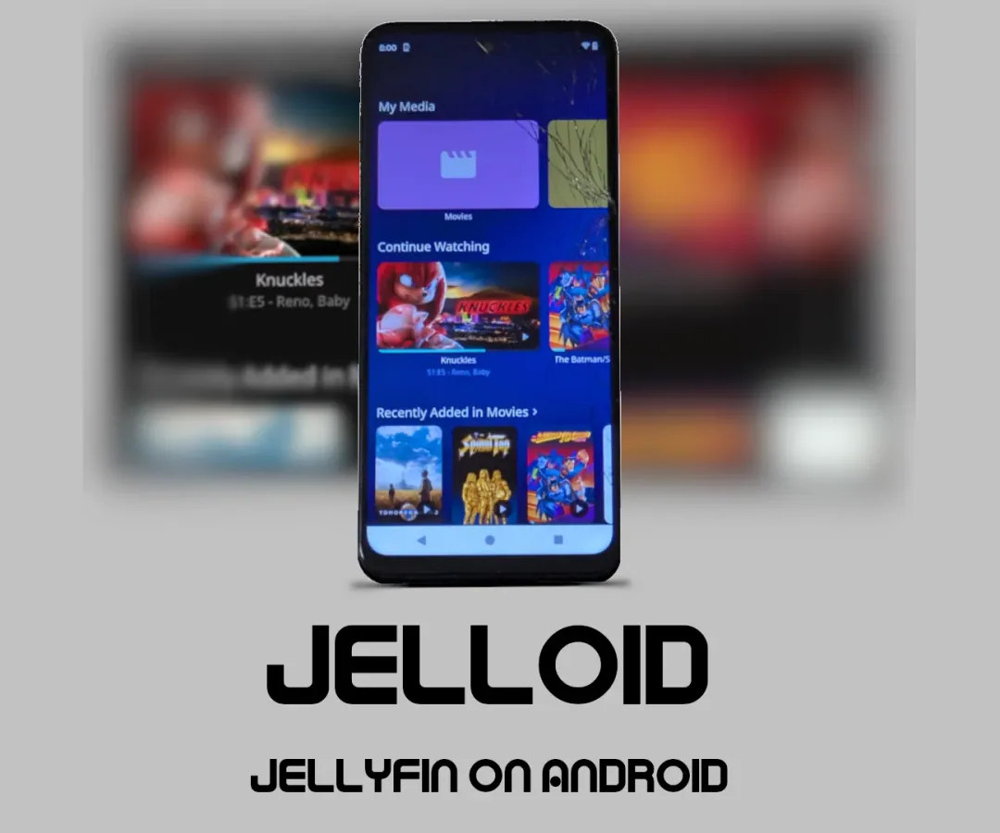

Jelloid: use an older Android device as a Jellyfin server
- The author published a step-by-step Instructable and reports tests on several Motorola devices, a Pixel and a Fire tablet.

- Record L05
- Sources reviewed 2026-10-21
- Hands-on status No KitAgain hands-on hardware test
- 3/5 dimensions have verifiable sources
- Only dimensions backed by verifiable sources are included; unevidenced dimensions remain null rather than receiving a neutral placeholder.
Decide before you build
- Current stage A complete author tutorial and multi-device claims exist, but KitAgain has not reproduced it or confirmed maintenance and licensing.
- Practical readiness It is an experiment for a spare Android device to host a light home media service; background reliability, transcoding and reboot recovery remain unknown.
- User value Useful for cheaply testing an old phone as a media server and exposing Android background, storage and network constraints.
- Follow-up recommendation Continue with a spare device and copied media if interruptions are acceptable; use a conventional server for stable transcoding or unique data.
Device fit and limits
Known fit or worth checking
- Several Motorola devices, a Pixel and a Fire Tablet are author-reported, but no exact model matrix exists
- Spare Android devices mainly serving direct-play media on a home LAN
Not established or unsuitable
- Servers requiring dependable hardware transcoding, concurrency or public exposure
- Models whose Android version, CPU architecture and background limits are unreviewed
- Irreplaceable media or unattended long-term service
Gaps, next step, and risk
- Why it remains E0 KitAgain has not reproduced it or confirmed script maintenance, licensing, Android range, transcoding capability or background-process limits.
- Next review step Preserve the script source and license, map reported devices to Android/architecture, then test install and reboot on one spare device.
- Risk and stop condition The server accesses media and the local network. Test with copies and review package origin, ports and permissions.
What each link contains
- Author's 13-step installation tutorial ↗author-tutorialContains the Android Jellyfin setup and author test claims; an independently reviewed repository and clear license remain missing.https://www.instructables.com/Jelloid-Jellyfin-on-Android/